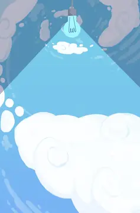
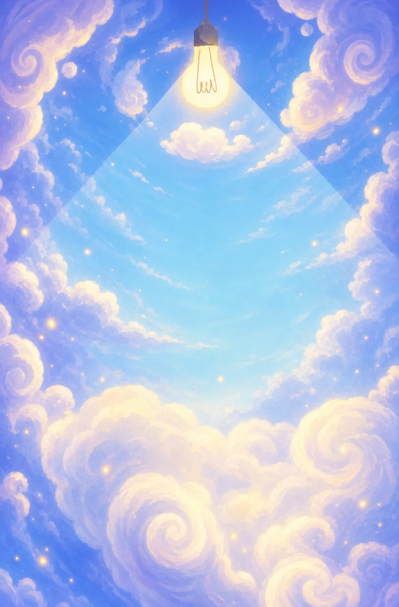
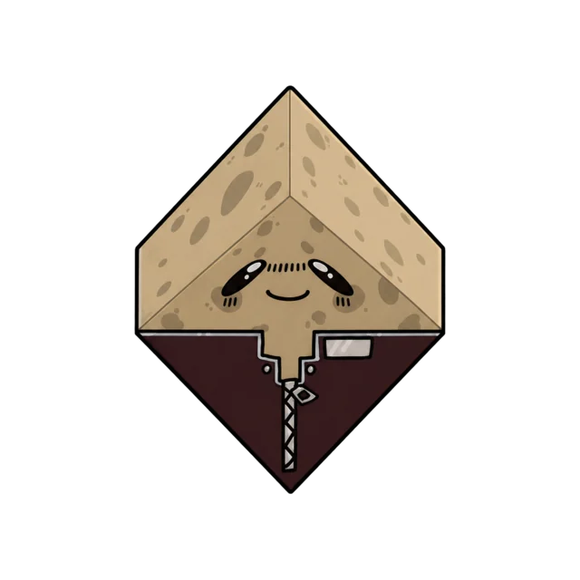
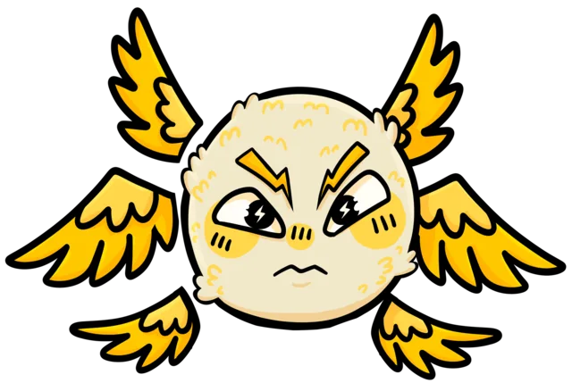

Ball is God?! Պտտեցրեք աշտարակը: Դարձեք հարված:
Հարդքոր ուղղահայաց վայրէջքի արկադ, որտեղ հորիզոնական քաշումով աշտարակը պտտվում է ընկնող Espa-ի շուրջը։ Բաց թողեք անվտանգ վայրէջքները, լիցքավորեք կոմբո հարվածը և ճեղքեք առասպելական աշխարհը, որտեղ մեկ անպաշտպան հարվածը վերջ է դնում անցմանը։
Ակտիվ արտադրություն՝ տասը տեղանքի տեսարան, բոսեր, ճյուղավորվող երկխոսություններ և կարմայի ուղիներ, որոնք փոխում են խաղի կանոնները:
Պտտեքքաշեք աշտարակը Espa-ի շուրջը
Ռիսկբաց թողնել երեք անվտանգ վայրէջք
Ջարդումճեղքել հարթակը
Ընթացիկ տարբերակի ներսում
Կարման փոխում է ավելին, քան միայն երկխոսությունը:
Լույսի, չեզոք և մութ կարմայի ուղիները փոխում են վահանի վարքը, նախազգուշացումները, թշնամիների ագրեսիան և բոսերի փուլերը, ուստի պատմությունը փոխում է խաղի ձևը:
Տարբերակի կարգավիճակ Ակտիվ արտադրությունԲոլոր տասը երկխոսության աշխարհները
Երկխոսության ֆոներ բոլոր տասը աշխարհների համար՝ վայրէջքի հերթականությամբ՝ Ena-ից մինչև Deka:



Ընթացիկ արտադրության միջերես
Մակարդակի ընտրության, երկխոսության և արդյունքի էկրանները ընթացիկ տարբերակում:
Սա ընթացիկ հոսքն է այն հերթականությամբ, որով հանդիպում եք դրան՝ մակարդակի ընտրություն, երկխոսություն, կարևոր ընտրություն, ապա հաղթանակի կամ առանձին պարտության էկրան: Ստորև ներկայացված յուրաքանչյուր պատկեր օգտագործում է արտադրական Unity նախագծի արվեստը:
Երկնային երթուղին ընտրում է գեներացված մակարդակներ 100 մակարդակից բաղկացած տասը գլխում:
Արտադրության ընտրացանկը ներկայացնում է տասը տեղանք՝ 100 մակարդակից բաղկացած գլուխներով, և բացում է անմիջապես ընտրված անցումը:

 201
201Երկխոսությունը տեղի է ունենում տեղանքի ներսում:
Կերպարի դիմանկարը, տեղանքի արվեստը և խոսողի անվանաթիթեղը կիսում են մեկ ուղղահայաց շրջանակ:



Shash
Շարունակեք, ուրեմն, բայց մի կարծեք, որ դա հեշտ կլինի: Tria Ձեզ սպասում են այնպիսի նյութեր, որոնք նախկինում եղած ամեն ինչ կթվա որպես մանրուք:
04 / Կարևոր ընտրություն
Պատասխանը դառնում է վայրէջքի մի մասը:
Գլխի 90 և 100 մակարդակներում հատուկ պանելը առաջարկում է ընտրել՝ խնայել, թե սպանել, նախքան երկխոսությունը կավարտի անցումը:

Խնայել
Սպանել
05 / Արդյունքների մենյուներ
Հաղթանակը տանում է առաջ: Պարտությունը վերադարձնում է նույն մարտահրավերին:
Ընթացիկ տարբերակն ունի արդյունքի երկու առանձին վիճակ. PanelWin-ը առաջարկում է կրկին խաղալ կամ անցնել հաջորդ մակարդակին, մինչդեռ PanelOver-ը թողնում է կրկնելու մեկ հստակ գործողություն:
Հաղթանակ · PanelWin
Վայրէջքն ավարտված է
 Կրկնել
Հաջորդը
Կրկնել
Հաջորդը
Կրկնել
Հաջորդը
Երկխոսության կերպարներ
Դեմքեր, որոնց հանդիպում եք իջնելիս:
Ստորև ներառված են բոլոր 25 կերպարները՝ արտադրական բաց և փակ դիմանկարների վավեր զույգերով: Պահեք կուրսորը քարտի վրա կամ ընտրեք այն՝ արտահայտությունը փոխելու համար:








Խաղի ակնարկ
Ball is God?! հարդքոր արկադային խաղ է պտտվող աշտարակի միջով ընկնելու մասին:
Գաղափարը
Առաջնորդեք Espa-ին աստվածային աշտարակով ներքև: Մեկ սխալը կարող է ավարտել փորձը, իսկ ձեր խոշոր ընտրությունները փոխում են աշխարհի խաղը:
Ընթացիկ տարբերակ
Իրականացված են տասը տեղանքի տեսարաններ, աշտարակի պրոցեդուրային գեներացում, կոմբո հարված, սահեցմամբ վահան, բոսերի կոնֆիգուրացիաներ, ճյուղավորվող երկխոսություններ, արտադրական ընտրացանկեր և տարբեր արտահայտություններով պատրաստ դիմանկարներ:
Լսարան
Խաղացողներ, ովքեր սիրում են դժվար բջջային արկադային խաղեր, ռիսկի և պարգևի ժամանակավորում և բոսեր՝ հետևելու համար պատմությամբ:
Կարգավիճակ
Ակտիվ արտադրություն: Վերջին աշխատանքը ներառում է խաղի ներքին համակարգերը, աշխարհների արվեստը, թեստավորումը և այն, թե ինչպես է խաղը խաղացվում հեռախոսով:
Առանձնահատկություններ
Ինչ եք անում Ball is God?! խաղում
Վայրէջք՝ պտտում քաշելով
Հորիզոնական քաշումը պտտում է աշտարակը ինքնաբերաբար ընկնող Espa-ի շուրջը՝ դիրքավորելով բացերը, վտանգները և անվտանգ հարթակները:
Հարդքոր արկադային ճնշում
Մեկ անպաշտպան հարվածը ավարտում է խաղը, ուստի պետք է կարդալ աշտարակը և ճիշտ ժամանակին կատարել յուրաքանչյուր քայլ:
Բոսեր և առասպելական աշխարհներ
Տասը տեղանքի տեսարան՝ յուրաքանչյուրն իր բոսերով, պատմությունը տանում են մի աշխարհից մյուսը:
Ընտրություններ, որոնք փոխում են կանոնները
Գթասրտությունը, ուժը և կարման փոխում են երկխոսությունները, վահանի կանոնները, թշնամիների ագրեսիան, նախազգուշացումները և բոսերի փուլերը:
Խաղային ցիկլ
Ինչպես խաղալ Ball is God?! խաղը
- Քայլ 01Կարդացեք վայրէջքը
Ուսումնասիրեք հաջորդ հարթակները, բացերը և վտանգները և փնտրեք անվտանգ ժամանակային պատուհաններ՝ ընկնելու ընթացքում:
- Քայլ 02Պտտեցնել աշտարակը
Հորիզոնական քաշումը պտտում է աշխարհը Espa-ի շուրջը՝ ուղղելով դեպի անվտանգ հարթակ կամ մտածված բաց:
- Քայլ 03Ռիսկ և ջարդում
Բաց թողեք երեք հարթակ՝ կոմբո հարվածը լիցքավորելու համար, ապա ճեղքեք կառույցները, մինչ վահանը պաշտպանում է մեկ մահացու սխալից:
- Քայլ 04Ընտրեք հետևանքը
Գթասրտությունն ու ուժը ձևավորում են կարման, երկխոսությունները և խաղային կանոնները, որոնք փոխանցվում են թշնամիներին և բոսերին:
Պատմություն / աշխարհ
Առասպելական աշտարակ, որտեղ ձեր ընտրությունները հետևում են ձեզ ներքև:
Ball is God?!-ը ծնվեց ուղղահայաց վայրէջքի բջջային արկադների հանդեպ մանկության տարիների հրապուրանքից՝ բացերը կարդալուց, արագ արձագանքելուց և բնազդով գոյատևելուց:
Ֆորմատը կարող էր ավելին տանել՝ բոսեր, բնավորությամբ կերպարներ, պատմություն և բարոյական լարվածություն: Ընթացիկ նախագիծը հետևում է Espa-ին տասը տեղանքի տեսարաններով և տարօրինակ կերպարների խմբով, որտեղ ընտրությունները փոխում են և՛ պատմությունը, և՛ խաղը:
Այսպիսով, նպատակը դարձավ պարզ ուղղահայաց վայրէջքի արկադ՝ բոսի մարտի լարվածությամբ և սյուժետային RPG-ի հետևանքներով:
- Տեսիլք
- Պտտվող աշտարակով արկադ՝ առասպելական պատմությամբ
- Ընթացիկ աշխարհի շրջանակը
- Տասը տեղանք և բոսերի կոնֆիգուրացիաներ
- Պատմվածքի փուլ
- Ամբողջական երկարաձև պատմության նախագիծը
- Արտադրական վիճակ
- Ակտիվ արտադրություն
Մի հայացքով
Պարզ քաշելու կառավարում՝ պատմությամբ, որը փոխում է կանոնները:
Քաշելով պտտելու կառավարումը ակնթարթային է: Մնացածը գալիս է առասպելական աշխարհներից, բոսերից և խաղը փոխող ընտրություններից:
Ընթացիկ տարբերակն արդեն համադրում է դետերմինիստական աշտարակի գեներացիան, ռիսկի և պարգևի հարվածները, մեկ հարվածով պարտությունը, բոսերին, ճյուղավորվող երկխոսությունը և խաղը փոխող կարման:
- Ժանր
- Սյուժետային ուղղահայաց վայրէջքի արկադ
- Պլատֆորմի թիրախ
- iOS / Android
- Նստաշրջանի ձևը
- Արագ ռաունդներ՝ հիմնված հմտության վրա
- Ստուդիա
- WillowinWorlds
Ներբեռնեք նյութերը
Ball is God?! մամուլի և ստեղծողի նյութեր
WebP նախադիտումներ մամուլի լուսաբանման, հրատարակիչների վերանայման և խանութի էջերի հղումների համար: Լրիվ լուծաչափի սկզբնական ֆայլերը հասանելի են ըստ հարցման:
Ապրանքանիշ և կերպարներ
Խաղի պատկերակը, ինչպես նաև բոլոր 25 ընթացիկ կերպարները, որոնք ունեն արտադրական երկխոսության ամբողջական դիմանկարներ: Անունները համապատասխանում են Unity-ի տեղայնացման բանալիներին:
EspaԽաղացողի կերպարի դիմանկար:
RevlaԱրտադրության երկխոսության դիմանկար:
ShashԱրտադրության երկխոսության դիմանկար:
ShushԱրտադրության երկխոսության դիմանկար:
ShishԱրտադրության երկխոսության դիմանկար:
GigoԱրտադրության երկխոսության դիմանկար:
GogaԱրտադրության երկխոսության դիմանկար:
GigaԱրտադրության երկխոսության դիմանկար:
AskoldԱրտադրության երկխոսության դիմանկար:
MirasԱրտադրության երկխոսության դիմանկար:
HihԱրտադրության երկխոսության դիմանկար:
HehԱրտադրության երկխոսության դիմանկար:
HahԱրտադրության երկխոսության դիմանկար:
MusyaԱրտադրության երկխոսության դիմանկար:
DusyaԱրտադրության երկխոսության դիմանկար:
SusyaԱրտադրության երկխոսության դիմանկար:
VladusԱրտադրության երկխոսության դիմանկար:
FrishaԱրտադրության երկխոսության դիմանկար:
LurenԱրտադրության երկխոսության դիմանկար:
KurenԱրտադրության երկխոսության դիմանկար:
Don YagonԱրտադրության երկխոսության դիմանկար:
LuryaԱրտադրության երկխոսության դիմանկար:
KhleyaԱրտադրության երկխոսության դիմանկար:
VaronԱրտադրության երկխոսության դիմանկար:
WhiteԱրտադրության երկխոսության դիմանկար:
Մենյուի ֆոններ
Մակարդակների ընտրության երկնային համակարգում օգտագործվող ընթացիկ արտադրական գրաֆիկան:
 Երկնային մենյու
Երկնային մենյուՈւղղահայաց վայրէջքի աշխարհներ
Ընթացիկ տասը տեղանքի ֆոների ամբողջական հավաքածուն՝ դասավորված Ena-ից մինչև Deka:
 01 · Երկնային աշխարհEna ուղղահայաց վայրէջքի ֆոն:
01 · Երկնային աշխարհEna ուղղահայաց վայրէջքի ֆոն:
 02 · Տիեզերական աշխարհDyo ուղղահայաց վայրէջքի ֆոն:
02 · Տիեզերական աշխարհDyo ուղղահայաց վայրէջքի ֆոն:
 03 · Փոթորիկ աշխարհTria ուղղահայաց վայրէջքի ֆոն:
03 · Փոթորիկ աշխարհTria ուղղահայաց վայրէջքի ֆոն:
 04 · ՁյունաշխարհTessera ուղղահայաց վայրէջքի ֆոն:
04 · ՁյունաշխարհTessera ուղղահայաց վայրէջքի ֆոն:
 05 · Հրաբխային աշխարհPente ֆոն՝ խաղում անիմացիոն:
05 · Հրաբխային աշխարհPente ֆոն՝ խաղում անիմացիոն:
 06 · Օվկիանոսի աշխարհEksi ուղղահայաց վայրէջքի ֆոն:
06 · Օվկիանոսի աշխարհEksi ուղղահայաց վայրէջքի ֆոն:
 07 · Անապատի աշխարհEpta ուղղահայաց վայրէջքի ֆոն:
07 · Անապատի աշխարհEpta ուղղահայաց վայրէջքի ֆոն:
 08 · Անտառային աշխարհOhto ուղղահայաց վայրէջքի ֆոն:
08 · Անտառային աշխարհOhto ուղղահայաց վայրէջքի ֆոն:
 09 · Քարանձավային աշխարհEnnea ուղղահայաց վայրէջքի ֆոն:
09 · Քարանձավային աշխարհEnnea ուղղահայաց վայրէջքի ֆոն:
 10 · Դժոխքի աշխարհDeka ուղղահայաց վայրէջքի ֆոն:
10 · Դժոխքի աշխարհDeka ուղղահայաց վայրէջքի ֆոն:
Սյուժետային արկադի ֆոններ
Երկխոսության տեղանքների ամբողջական հավաքածու. Լույսի սրահը և ֆոները բոլոր տասը աշխարհների համար:
 00 · Լույսի սրահԲացման երկխոսության ֆոն:
01 · Երկնքի երկխոսությունEna պատմության ֆոն:
00 · Լույսի սրահԲացման երկխոսության ֆոն:
01 · Երկնքի երկխոսությունEna պատմության ֆոն:

 02 · Տիեզերական երկխոսությունDyo պատմության ֆոն:
02 · Տիեզերական երկխոսությունDyo պատմության ֆոն:
 03 · Փոթորկի երկխոսությունTria պատմության ֆոն:
03 · Փոթորկի երկխոսությունTria պատմության ֆոն:
 04 · Ձյան երկխոսությունTessera պատմության ֆոն:
04 · Ձյան երկխոսությունTessera պատմության ֆոն:
 05 · Հրաբխի երկխոսությունPente պատմության ֆոն:
05 · Հրաբխի երկխոսությունPente պատմության ֆոն:
 06 · Օվկիանոսի երկխոսությունEksi պատմության ֆոն:
06 · Օվկիանոսի երկխոսությունEksi պատմության ֆոն:
 07 · Անապատի երկխոսությունEpta պատմության ֆոն:
07 · Անապատի երկխոսությունEpta պատմության ֆոն:
 08 · Անտառային երկխոսությունOhto պատմության ֆոն:
08 · Անտառային երկխոսությունOhto պատմության ֆոն:
 09 · Քարանձավային երկխոսությունEnnea պատմության ֆոն:
09 · Քարանձավային երկխոսությունEnnea պատմության ֆոն:
 10 · Դժոխքի երկխոսությունDeka պատմության ֆոն:
10 · Դժոխքի երկխոսությունDeka պատմության ֆոն:
Ball is God?! ՀՏՀ
Հաճախ տրվող հարցեր Ball is God?! խաղի մասին
Ինչպիսի՞ խաղ է Ball is God?!-ը:
Հարդքոր ուղղահայաց վայրէջքի արկադ: Դուք աշտարակը պտտում եք ընկնող Espa-ի շուրջը, բաց թողնում անվտանգ վայրէջքները՝ հարվածները լիցքավորելու համար, և ճեղքում առասպելական աշխարհները:
Ինչպե՞ս խաղալ Ball is God?! խաղը:
Քաշեք հորիզոնական ուղղությամբ՝ աշտարակը պտտելու համար, բաց թողեք երեք հարթակ՝ հարվածը լիցքավորելու համար, և սահեցրեք ուղղահայաց, երբ վերալիցքավորվող վահանը պետք է կլանի մահացու հարվածը:
Արդյո՞ք Ball is God?! խաղը արդեն թողարկվել է:
Դեռ ոչ: Այն ակտիվ արտադրության փուլում է՝ խաղի ներքին համակարգեր, աշխարհների արվեստ, սյուժետային բովանդակություն և թեստավորում: Հրապարակային թողարկման ամսաթիվ չկա: Թիրախային հարթակներն են iOS-ը և Android-ը:
Ինչո՞վ է առանձնանում Ball is God?! խաղը:
Այն միավորում է ռիսկի և պարգևի արկադային լարվածությունը տասը տեղանքի և կարմայի հետ, որը փոխում է երկխոսությունները, թշնամիներին, նախազգուշացումները, վահանները և բոսերին:
Ո՞վ է ստեղծում Ball is God?! խաղը:
WillowinWorlds-ը՝ անկախ ստուդիա, որը ստեղծում է բջջային գլուխկոտրուկներ և արկադային խաղեր:
Կարո՞ղ եմ օգտագործել Ball is God?! խաղի մամուլի նյութերը:
Այո՝ մամուլի, հրատարակիչների վերանայման և խանութի հղումների համար: Սկզբնական ֆայլերը մնում են փակ, քանի դեռ դրանք մեզնից չեք խնդրել:
Ball is God?! Devlog
Ի՞նչ փոխվեց և երբ
- Աշխարհի մակերեսները և վտանգի վավերացումը
Կերպարների ներկայացումը, դետերմինիստական գեներացիան և փշերի վտանգները միասին ստուգվեցին տեսողական և վավերացման տեսակետից:
- 2026 թվականի հուլիսԱրտադրական UI-ի և կերպարների մշակում
Մակարդակի ընտրությունը, ընդհանուր գործողությունների կառավարումը, ուղղահայաց երկխոսության շրջանակը և զույգ կերպարների արտահայտությունները այժմ պատրաստ են:
- 2026 թվականի փետրվարԾրագրի շրջանակի վերանայում
Թիմն ավարտեց սյուժեի ինտեգրման խոշոր փուլը և վերանայեց նախագծի ամբողջ մասշտաբը՝ տասը աշխարհ, բարոյական ընտրություններ, բոսեր և բազմաթիվ ավարտներ:
- 2025 թվականի ապրիլ-մայիսՊատմության վերաշարադրում և կարողություններ
Ամբողջ պատմությունը վերաշարադրվեց, կերպարների կարողությունները բարելավվեցին և բարոյական հետևանքները ավելի պարզ դարձան:
- 2024 թվականի օգոստոսՊատմության ուղղությունը սկսվում է
Թիմը որոշեց, որ Ball is God?! խաղը պետք է լինի ավելին, քան պարզ արկադային վայրէջք, և ավելացրեց առասպելական պատմություն և բարոյական ընտրության տեսլական:
- 2024 թվականի հուլիսԲնօրինակ հայեցակարգ
Նախագիծը սկսվեց որպես ստուդիայի առաջին խաղային գաղափար՝ արագ ուղղահայաց արկադային խաղ աստվածային աշտարակով ընկնելու մասին:
- Ընթացիկ տարբերակԱրկադ և պատմություն մեկ տարբերակում
Պտտվող աշտարակով վայրէջքը, կոմբո հարվածը, սահեցմամբ վահանը, բոսերը, երկխոսությունը և կարման այժմ աշխատում են միասին մեկ տարբերակում: